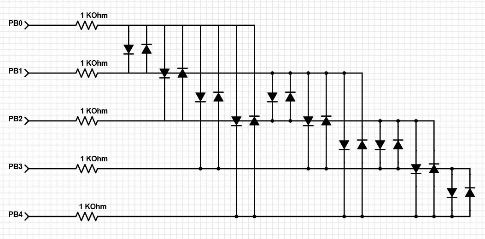

Charlieplexed LED Tree
Arduino is a great platform - until you attempt any project requiring more than the few available I/O ports. To combat this you can use charlieplexing. This technique combines the Arduino's capability to set I/O pins as high output, low output, and input and the current flow limiting property of diodes. By setting the output on one side of a diode low, the output on the other side high, and all other I/O pins to a high impedance input you can allow current to flow through a specific path. Below is a demonstration of this I created using LEDs.
LED tree with a cover

Bare LED tree
Circuit Diagram
